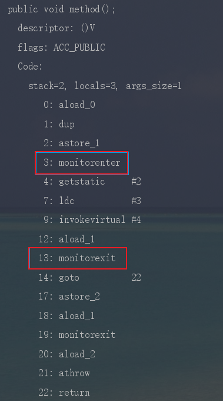
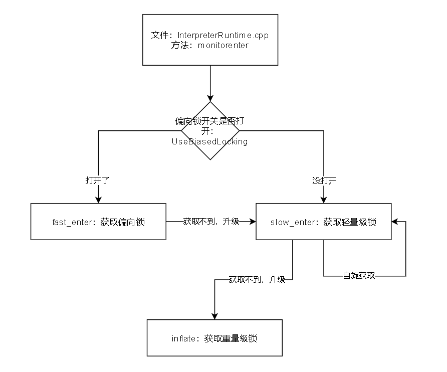
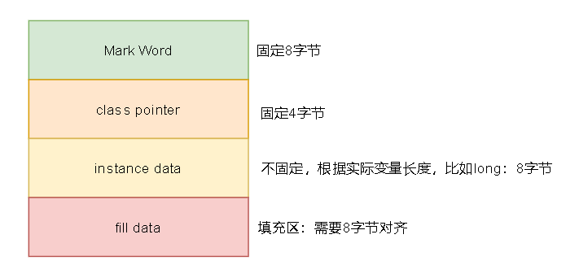
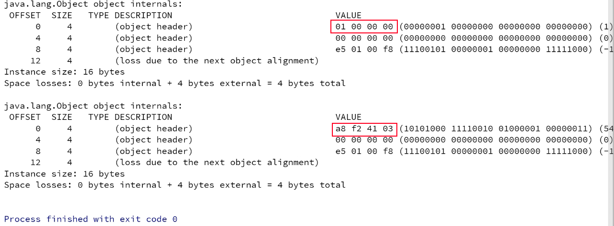
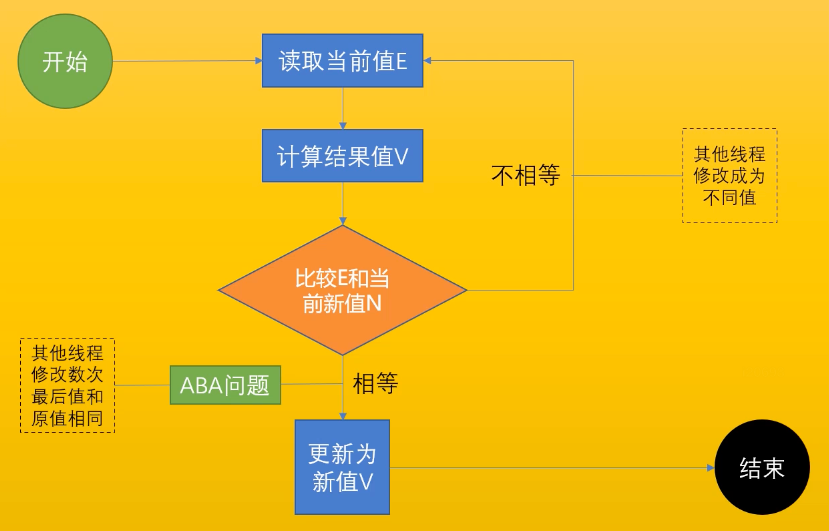
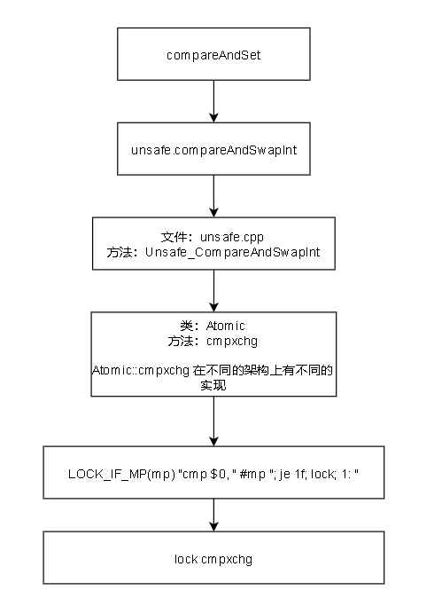
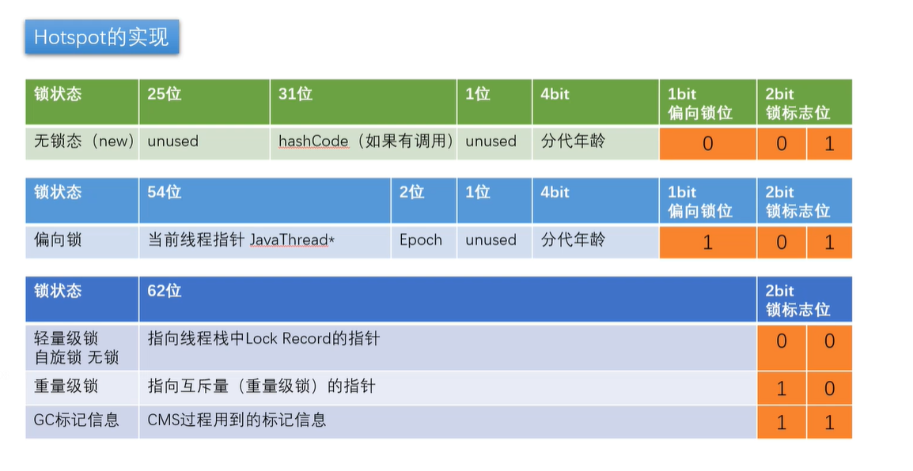
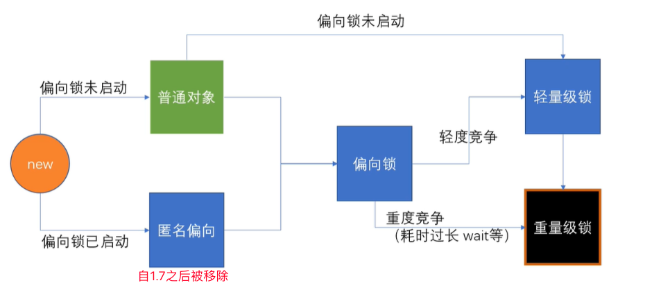
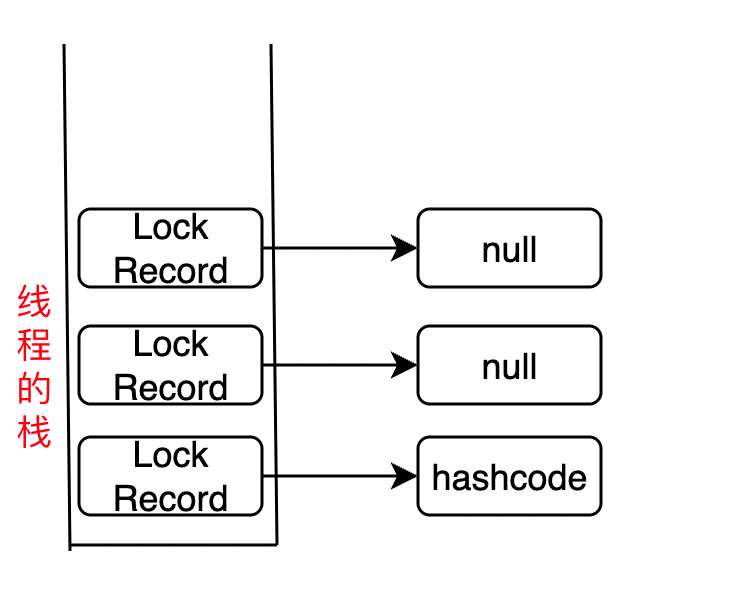

JUC并发之synchronized

锁的出现主要是解决原子性。
但是：锁不仅解决了原子性。同样的，它还解决了可见性。
但是：锁不仅解决了原子性和可见性，还解决了有序性。
哈哈哈哈，牛不牛
锁把可见性，有序性，原子性全都解决了。
但是
锁对有序性的解决，只是保证了as-if-serial语义，并不是严格意义上的有序性。
Java提供的锁技术：synchronized关键字
synchronized关键字的简单使用
class X {
// 修饰非静态方法
synchronized void foo() {
// 临界区
}
// 修饰静态方法
synchronized static void bar() {
// 临界区
}
// 修饰代码块
Object obj = new Object()；
void baz() {
synchronized(obj) {
// 临界区
}
}
} 当修饰静态方法的时候，锁定的是当前类的 Class 对象，在上面的例子中就是 Class X；
当修饰非静态方法的时候，锁定的是当前实例对象 this。
synchronized关键字的实现原理
代码层面
synchronized(obj){
//...
}字节码层面
分为两种情况：
synchronized修饰代码块
synchronized修饰方法
synchronized修饰代码块
monitorenter
moniterexit
反编译一段synchronized修饰代码块代码，
javap -c -s -v -l XXX.class，可以看到相应的字节码指令。
synchronized修饰方法
- ACC_SYNCHRONIZED 标记
- 反编译一段synchronized修饰方法，
javap -c -s -v -l XXX.class，可以看到相应的字节码指令。
JVM层级（Hotspot）
InterpreterRuntime.cpp:: monitorenter方法是开始获取锁
IRT_ENTRY_NO_ASYNC(void, InterpreterRuntime::monitorenter(JavaThread* thread, BasicObjectLock* elem))
#ifdef ASSERT
thread->last_frame().interpreter_frame_verify_monitor(elem);
#endif
if (PrintBiasedLockingStatistics) {
Atomic::inc(BiasedLocking::slow_path_entry_count_addr());
}
Handle h_obj(thread, elem->obj());
assert(Universe::heap()->is_in_reserved_or_null(h_obj()),"must be NULL or an object");
//UseBiasedLocking 轻量级锁的开关是否打开
if (UseBiasedLocking) {
// Retry fast entry if bias is revoked to avoid unnecessary inflation
ObjectSynchronizer::fast_enter(h_obj, elem->lock(), true, CHECK);
} else {
ObjectSynchronizer::slow_enter(h_obj, elem->lock(), CHECK);
}
assert(Universe::heap()->is_in_reserved_or_null(elem->obj()),"must be NULL or an object");
#ifdef ASSERT
thread->last_frame().interpreter_frame_verify_monitor(elem);
#endif
IRT_ENDfast_enter方法：获取偏向锁
void ObjectSynchronizer::fast_enter(Handle obj, BasicLock* lock, bool attempt_rebias, TRAPS) {
if (UseBiasedLocking) {
if (!SafepointSynchronize::is_at_safepoint()) {
//在安全点的时候，尝试获取偏向锁：revoke_and_rebias
BiasedLocking::Condition cond = BiasedLocking::revoke_and_rebias(obj, attempt_rebias, THREAD);
if (cond == BiasedLocking::BIAS_REVOKED_AND_REBIASED) {
return;
}
} else {
assert(!attempt_rebias, "can not rebias toward VM thread");
BiasedLocking::revoke_at_safepoint(obj);
}
assert(!obj->mark()->has_bias_pattern(), "biases should be revoked by now");
}
//偏向锁没有获取到，升级为：获取轻量级锁
slow_enter (obj, lock, THREAD) ;
}slow_enter方法：获取轻量级锁
void ObjectSynchronizer::slow_enter(Handle obj, BasicLock* lock, TRAPS) {
markOop mark = obj->mark();
assert(!mark->has_bias_pattern(), "should not see bias pattern here");
if (mark->is_neutral()) {
// Anticipate successful CAS -- the ST of the displaced mark must
// be visible <= the ST performed by the CAS.
// 获取轻量级锁的时候，会先进行自旋：cmpxchg_ptr，尝试获取轻量级锁
lock->set_displaced_header(mark);
if (mark == (markOop) Atomic::cmpxchg_ptr(lock, obj()->mark_addr(), mark)) {
TEVENT (slow_enter: release stacklock) ;
return ;
}
// Fall through to inflate() ...
} else
if (mark->has_locker() && THREAD->is_lock_owned((address)mark->locker())) {
assert(lock != mark->locker(), "must not re-lock the same lock");
assert(lock != (BasicLock*)obj->mark(), "don't relock with same BasicLock");
lock->set_displaced_header(NULL);
return;
}
#if 0
// The following optimization isn't particularly useful.
if (mark->has_monitor() && mark->monitor()->is_entered(THREAD)) {
lock->set_displaced_header (NULL) ;
return ;
}
#endif
// The object header will never be displaced to this lock,
// so it does not matter what the value is, except that it
// must be non-zero to avoid looking like a re-entrant lock,
// and must not look locked either.
lock->set_displaced_header(markOopDesc::unused_mark());
// 如果轻量级锁也没有获取到，就升级为：重量级锁 inflate
ObjectSynchronizer::inflate(THREAD, obj())->enter(THREAD);
}inflate方法：获取重量级锁
Java实例对象内存布局
对象实例内存布局
- Mark Word：记录锁信息，GC信息等等
- class pointer：指向当前对象的class字节码文件
引用Maven依赖
<dependencies>
<!-- https://mvnrepository.com/artifact/org.openjdk.jol/jol-core -->
<dependency>
<groupId>org.openjdk.jol</groupId>
<artifactId>jol-core</artifactId>
<version>0.9</version>
</dependency>
</dependencies>编写测试代码
package com.mashibing.insidesync;
import org.openjdk.jol.info.ClassLayout;
public class T04_HelloJol {
public static void main(String[] args) {
Object o = new Object();
System.out.println(ClassLayout.parseInstance(o).toPrintable());
synchronized (o) {
System.out.println(ClassLayout.parseInstance(o).toPrintable());
}
}
}测试结果
用户态与内核态
JDK早期，synchronized 叫做重量级锁， 因为申请锁资源必须通过 kernel 系统调用进行锁的分配，所以叫：重量级锁。
后来JDK对synchronized进行了优化，细分为了：偏向锁，轻量级锁，重量级锁。其中偏向锁其实就是无锁，轻量级锁不需要 kernel 内核调用。
所以：在用户态生成的锁都属于轻量级，因为不需要 kernel 内核调用。 kernel 内核调用就是内核态，比较耗资源。
重量级锁的申请，需要应用程序通过用户态，通过指令 0x80 调用内核态，去申请锁。
;hello.asm
;write(int fd, const void *buffer, size_t nbytes)
section data
msg db "Hello", 0xA
len equ $ - msg
section .text
global _start
_start:
mov edx, len
mov ecx, msg
mov ebx, 1 ;文件描述符1 std_out
mov eax, 4 ;write函数系统调用号 4
int 0x80
mov ebx, 0
mov eax, 1 ;exit函数系统调用号
int 0x80
CAS
Compare And Swap (Compare And Exchange) / 自旋 / 自旋锁 / 无锁 （无重量锁）
因为经常配合循环操作，直到完成为止，所以泛指一类操作
cas(v, a, b) ，变量v，期待值a, 修改值b
CAS的ABA问题
ABA问题，你的女朋友在离开你的这段儿时间经历了别的人，自旋就是你空转等待，一直等到她接纳你为止
解决办法（加版本号），基础类型简单值不需要版本号
每次修改变量，都在这个变量的版本号上加1，这样，刚刚A->B->A，虽然A的值没变，但是它的版本号已经变了，再判断版本号就会发现此时的A已经被改过了。参考乐观锁的版本号，这种做法可以给数据带上了一种实效性的检验。
Java提供了AtomicStampReference类，它的compareAndSet方法首先检查当前的对象引用值是否等于预期引用，并且当前印戳（Stamp）标志是否等于预期标志，如果全部相等，则以原子方式将引用值和印戳标志的值更新为给定的更新值。
CAS的循环性能开销问题
自旋CAS，如果一直循环执行，一直不成功，会给CPU带来非常大的执行开销。
怎么解决循环性能开销问题？
在Java中，很多使用自旋CAS的地方，会有一个自旋次数的限制，超过一定次数，就停止自旋。
CAS的只能保证一个变量的原子操作问题
CAS 保证的是对一个变量执行操作的原子性，如果对多个变量操作时，CAS 目前无法直接保证操作的原子性的。
怎么解决只能保证一个变量的原子操作问题？
可以考虑改用锁来保证操作的原子性
可以考虑合并多个变量，将多个变量封装成一个对象，通过AtomicReference来保证原子性。
CAS在JUC包的应用
- AtomicInteger
- AtomicXXX
CAS的底层实现
以 AtomicInteger 这个类的 compareAndSet 方法为例
AtomicInteger:
public final int incrementAndGet() {
for (;;) {
int current = get();
int next = current + 1;
if (compareAndSet(current, next))
return next;
}
}
public final boolean compareAndSet(int expect, int update) {
return unsafe.compareAndSwapInt(this, valueOffset, expect, update);
}Unsafe:
public final native boolean compareAndSwapInt(Object var1, long var2, int var4, int var5);Unsafe的底层实现是C++
jdk8u: unsafe.cpp
UNSAFE_ENTRY(jboolean, Unsafe_CompareAndSwapInt(JNIEnv *env, jobject unsafe, jobject obj, jlong offset, jint e, jint x))
UnsafeWrapper("Unsafe_CompareAndSwapInt");
oop p = JNIHandles::resolve(obj);
jint* addr = (jint *) index_oop_from_field_offset_long(p, offset);
// c++ 文件最终调用的是 Atomic::cmpxchg
return (jint)(Atomic::cmpxchg(x, addr, e)) == e;
UNSAFE_ENDAtomic::cmpxchg 在不同的架构上有不同的实现。
以 linux_86为例：在这个文件上： jdk8u: atomic_linux_x86.inline.hpp 93行
__asm__：表示是一个汇编指令
inline jint Atomic::cmpxchg (jint exchange_value, volatile jint* dest, jint compare_value) {
int mp = os::is_MP();
__asm__ volatile (LOCK_IF_MP(%4) "cmpxchgl %1,(%3)"
: "=a" (exchange_value)
: "r" (exchange_value), "a" (compare_value), "r" (dest), "r" (mp)
: "cc", "memory");
return exchange_value;
}jdk8u: atomic_linux_x86.inline.hpp
#define LOCK_IF_MP(mp) "cmp $0, " #mp "; je 1f; lock; 1: "最终实现：
- lock指令，在多处理器情况下，会加上lock指令，如果是单处理器，就不需要lock指令了。
- cmpxchg：是一个汇编指令，在cpu层面实现了cas操作
lock cmpxchg 硬件：
lock指令在执行后面指令的时候锁定一个北桥信号不采用锁总线的方式
锁升级
开发Java的这群大佬，总是想方设法的优化Java，其中锁肯定是重中之重。
我们都知道，向内核态申请锁是一个很重量级的操作，必然会影响性能；
所以后来有了CAS；
但是CAS的自旋锁仍然会消耗性能；
所以这群大佬们，又想了一些别的办法：引入了
- 偏向锁
至此，Java中的锁就有：偏向锁，轻量级锁（CAS），重量级锁。
那么这些锁之间的关系是什么呢？
锁升级
所谓的锁升级，就是从：无锁->偏向锁->轻量级锁->重量级锁的变化过程；
我们现在要探究的就是，这个过程是怎么变化的。
在探究变化之前，我们要先知道锁是什么？
锁的本质
锁的本质：就是实例对象内存布局中 markword 的锁标识位。
synchronized优化的过程和markword息息相关
用markword中最低的三位代表锁状态 其中1位是偏向锁位 2位是普通锁位
markword的实现表
以上实验环境是JDK11，打开就是偏向锁，而JDK8默认对象头是无锁
锁升级过程
以上实验环境是JDK11，打开就是偏向锁，而JDK8默认对象头是无锁
什么是偏向锁
在无竞争的情况下，只是在 markword 里存储当前线程指针，CAS操作都不做。
为什么要引入偏向锁
这是因为，Java的开发者发现，对于一个同步块来说，在大部分情况下，都是只有一个线程在执行，根本不存在竞争，所以就直接给一个标识位就可以了。
上偏向锁，指的就是，把markword的线程ID改为自己线程ID的过程。
什么时候释放偏向锁
- 偏向锁不会主动释放
- 当获取偏向锁的线程死亡，偏向锁会释放，此时对象是无锁状态
- 当有别的线程来竞争偏向锁，此时会升级位轻量级锁，偏向锁也就不存在了。
什么是偏向锁未启动/已启动
是否要开启偏向锁，在JVM中是有一个变量标识的。这个变量的默认是：开启。但是是延迟开启
延迟开启是什么意思？
就是说：在JVM启动的时候，偏向锁默认是没有启动的，经过一定的时间之后，偏向锁才启动。这个时候线程才可以获取偏向锁。那么在偏向锁没有启动的时候，此时线程获取的锁直接就是轻量级锁。
那么一定的时间是指多少时间
默认是4秒，可以通过 -XX:BiasedLockingStartupDelay=0 来进行设置。
为什么要把偏向锁设置为延迟启动
因为在JVM启动的时候有很多内部线程，这些内部线程必然会抢占资源，也就是说这些内部线程必然会将锁升级到轻量级锁甚至重量级锁。既然是必然的，那就没必要在经历一次偏向锁，因为经历一次偏向锁，就会造成偏向锁不断的进行锁撤销和锁升级的操作，效率较低。
什么是匿名偏向
匿名偏向就是在偏向锁开关开启的情况下，但是此时没有任何线程进入。
表示当前对象没有偏向任何线程。此时匿名偏向的markword标识位是101，和偏向锁的markword标识位是一样的。
换言之：打开偏向锁标识开关，new出来的对象，默认就是一个可偏向匿名对象101；不打开偏向锁标识开关，new出来的对象就是普通对象。
但是它和偏向锁的位移区别就是：偏向锁此时是有线程进入的。匿名偏向此时没有任何线程进入。
匿名偏向只有JDK1.6才有，1.7之后就被移除了。
1.7之后只有偏向锁了。
什么是轻度竞争
轻度竞争，就是当前有别的线程来抢占锁资源。
比如：目前线程-A拿到了对象O的偏向锁；此时线程B也需要拿对象O的锁，此时就产生了竞争；
既然有竞争，偏向锁就要升级，升级为：轻量级锁。
轻度竞争：表示自旋次数小于10次（1.6之后加入了自适应自旋，这个10次就没用了），或者自旋的线程数小于CPU核数的一半。
什么是轻量级锁
本质就是CAS；
自旋锁又是什么？
自旋锁就是当前线程在不停的做CAS操作，抢占锁。就相当于在自旋。
什么是重度竞争
重度竞争是和轻度竞争比较的，只要超过了轻度，就是重度竞争。
- 自旋次数大于10次（1.6之后加入了自适应自旋，这个10次就没用了）
- 自旋的线程数大于CPU核数的一半
什么是重量级锁
就是想内核态通过0x80申请的锁，向操作系统申请资源，linux mutex , CPU从3级-0级系统调用，线程挂起，进入等待队列，等待操作系统的调度，然后再映射回用户空间
为什么有了轻量级锁（CAS自旋锁）还需要重量级锁
- CAS自旋锁浪费性能
- 而重量级锁有一个waitSet，不占用CPU性能
锁重入
synchronized 是一个可重入锁。
什么是可重入
就是一个线程可以多次获取当前锁；
举个例子
public static void main(String[] args){
Object o = new Object();
for (int i=0; i<3; i++){
synchronized(o){
//do something...
}
}
}synchronized代码快中的代码是可以被多次执行的。也就验证了synchronized的可重入性。
如果不可重入的话，在第二次循环，就阻塞了。
可重入的实现原理
通过markword的实现表：我这里在拿图拿过来，方便阅读：锁的本质
我们可以看到在无锁态下，markword中有31位是表示hashcode的。这里的hashcode是当前对象的identity hashcode；也就是唯一标识当前对象的。
但是当对象变成了偏向锁的时候，hashcode的31位就没有了，取而代之的是54位的线程指针。
这个线程指针是什么？它又指向了什么？
首先我们要知道，一个对象从无锁态变成偏向锁，必然是因为有线程进入，线程进入了，拿到了这个对象的偏向锁。
此时线程就会创建一个LR（Lock Record）放进自己的线程栈中（线程栈是线程私有的）
而markword中这个54位的线程指针，其实是线程的ID，而它指向了当前的线程，就是拿到了这个对象的偏向锁的这个线程；
什么是LR（Lock Record）
- 线程在获取偏向锁的时候，会创建一个LockRecord放在自己的栈中；而对象的hashcode就是存在LockRecord中（我们知道hashcode是对象的identity hashcode，唯一标识），这样当前线程就知道锁的是哪个对象了。
- 当这个线程再次获取该对象锁的时候（此时就是重入），会再次创建一个LockRecord，只不过此时的LockRecord指向的是null；
- 同样的，在释放锁的时候，就是一个一个出栈。
扩展：偏向锁和轻量级锁的hashcode是放在lockRecord中的；重量级锁是放在ObjectMonitor的成员中
扩展：关于epoch: (不重要)
批量重偏向与批量撤销渊源：从偏向锁的加锁解锁过程中可看出，当只有一个线程反复进入同步块时，偏向锁带来的性能开销基本可以忽略，但是当有其他线程尝试获得锁时，就需要等到safe point时，再将偏向锁撤销为无锁状态或升级为轻量级，会消耗一定的性能，所以在多线程竞争频繁的情况下，偏向锁不仅不能提高性能，还会导致性能下降。于是，就有了批量重偏向与批量撤销的机制。
原理以class为单位，为每个class维护解决场景批量重偏向（bulk rebias）机制是为了解决：一个线程创建了大量对象并执行了初始的同步操作，后来另一个线程也来将这些对象作为锁对象进行操作，这样会导致大量的偏向锁撤销操作。批量撤销（bulk revoke）机制是为了解决：在明显多线程竞争剧烈的场景下使用偏向锁是不合适的。
一个偏向锁撤销计数器，每一次该class的对象发生偏向撤销操作时，该计数器+1，当这个值达到重偏向阈值（默认20）时，JVM就认为该class的偏向锁有问题，因此会进行批量重偏向。每个class对象会有一个对应的epoch字段，每个处于偏向锁状态对象的Mark Word中也有该字段，其初始值为创建该对象时class中的epoch的值。每次发生批量重偏向时，就将该值+1，同时遍历JVM中所有线程的栈，找到该class所有正处于加锁状态的偏向锁，将其epoch字段改为新值。下次获得锁时，发现当前对象的epoch值和class的epoch不相等，那就算当前已经偏向了其他线程，也不会执行撤销操作，而是直接通过CAS操作将其Mark Word的Thread Id 改成当前线程Id。当达到重偏向阈值后，假设该class计数器继续增长，当其达到批量撤销的阈值后（默认40），JVM就认为该class的使用场景存在多线程竞争，会标记该class为不可偏向，之后，对于该class的锁，直接走轻量级锁的逻辑。
锁升级和锁重入的小结
加锁，指的是锁定对象
锁升级的过程
JDK较早的版本 OS的资源 互斥量 用户态 -> 内核态的转换 重量级 效率比较低
现代版本进行了优化
无锁 - 偏向锁 -轻量级锁（自旋锁）-重量级锁
偏向锁 - markword 上记录当前线程指针，下次同一个线程加锁的时候，不需要争用，只需要判断线程指针是否同一个，所以，偏向锁，偏向加锁的第一个线程 。hashCode备份在线程栈上 线程销毁，锁降级为无锁
有争用 - 锁升级为轻量级锁 - 每个线程有自己的LockRecord在自己的线程栈上，用CAS去争用markword的LR的指针，指针指向哪个线程的LR，哪个线程就拥有锁
自旋超过10次，升级为重量级锁 - 如果太多线程自旋 CPU消耗过大，不如升级为重量级锁，进入等待队列（不消耗CPU）-XX:PreBlockSpin
自旋锁在 JDK1.4.2 中引入，使用 -XX:+UseSpinning 来开启。JDK 6 中变为默认开启，并且引入了自适应的自旋锁（适应性自旋锁）。
自适应自旋锁意味着自旋的时间（次数）不再固定，而是由前一次在同一个锁上的自旋时间及锁的拥有者的状态来决定。如果在同一个锁对象上，自旋等待刚刚成功获得过锁，并且持有锁的线程正在运行中，那么虚拟机就会认为这次自旋也是很有可能再次成功，进而它将允许自旋等待持续相对更长的时间。如果对于某个锁，自旋很少成功获得过，那在以后尝试获取这个锁时将可能省略掉自旋过程，直接阻塞线程，避免浪费处理器资源。
偏向锁由于有锁撤销的过程revoke，会消耗系统资源，所以，在锁争用特别激烈的时候，用偏向锁未必效率高。还不如直接使用轻量级锁。
synchronized的优化
在JDK1.6之前，synchronized的实现直接调用ObjectMonitor的enter和exit，这种锁被称之为重量级锁。从JDK6开始，HotSpot虚拟机开发团队对Java中的锁进行优化，提升了synchronized的性能。
优化分为两部分：
C1 Compile Level 1 (一级优化)：增加了适应性自旋、轻量级锁和偏向锁等优化策略，
C2 Compile Level 2 (二级优化)：增加了锁消除、锁粗化等优化策略
锁消除 lock eliminate
public void add(String str1,String str2){
StringBuffer sb = new StringBuffer();
sb.append(str1).append(str2);
}我们都知道 StringBuffer 是线程安全的，因为它的关键方法都是被 synchronized 修饰过的，但我们看上面这段代码，我们会发现，sb 这个引用只会在 add 方法中使用，不可能被其它线程引用（因为是局部变量，栈私有），因此 sb 是不可能共享的资源，JVM 会自动消除 StringBuffer 对象内部的锁。
锁粗化 lock coarsening
public String test(String str){
int i = 0;
StringBuffer sb = new StringBuffer():
while(i < 100){
sb.append(str);
i++;
}
return sb.toString():
}JVM 会检测到这样一连串的操作都对同一个对象加锁（while 循环内 100 次执行 append，没有锁粗化的就要进行 100 次加锁/解锁），此时 JVM 就会将加锁的范围粗化到这一连串的操作的外部（比如 while 虚幻体外），使得这一连串操作只需要加一次锁即可。
锁降级（不重要）
https://www.zhihu.com/question/63859501
其实，只被VMThread访问，降级也就没啥意义了。所以可以简单认为锁降级不存在！
参考资料
http://openjdk.java.net/groups/hotspot/docs/HotSpotGlossary.html